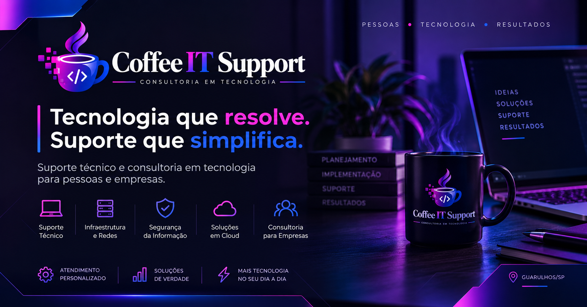

Interface responsiva
Experiência preparada para desktops, tablets e dispositivos móveis.
CASE · PROJETO WEB
Website institucional desenvolvido para apresentar serviços de suporte, infraestrutura e consultoria em tecnologia, combinando identidade visual própria, experiência responsiva e integrações web.
VISÃO GERAL
O Coffee IT Support funciona como presença comercial e também como case de desenvolvimento web. O projeto reúne catálogo de serviços, canais de contato, responsividade, acessibilidade e integração serverless com serviço externo sem expor credenciais no frontend.
Experiência preparada para desktops, tablets e dispositivos móveis.
Apresentação organizada das soluções de suporte, infraestrutura e consultoria.
Fluxo direto de contato para facilitar o atendimento de potenciais clientes.
Integração intermediada por função serverless, mantendo o token fora do navegador.
Melhorias de navegação, legibilidade e utilização em diferentes contextos.
Projeto versionado no GitHub e publicado na Vercel.
ARQUITETURA
Frontend estático combinado com uma função serverless para integrações que exigem configuração privada no ambiente de execução.
IDENTIDADE
A identidade visual do Coffee IT Support foi aplicada ao site e aos materiais digitais, mantendo a proposta comercial separada da identidade principal da B.A Dev Lab.

Capturas reais serão incorporadas na próxima atualização visual.CÓDIGO & PUBLICAÇÃO
O código-fonte e a documentação ficam disponíveis no GitHub, enquanto a versão pública do projeto é entregue diretamente pela Vercel. Por ser uma aplicação web, o acesso ao produto é feito pelo site publicado, sem necessidade de instalador ou Release.